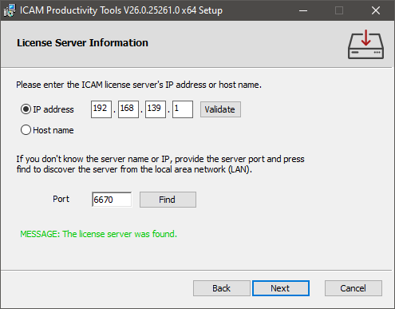

Control Emulator Installation
A typical Control Emulator installation includes the installation of a suite of ICAM Productivity and Integration tools. ICAM Productivity Tools include the Icam Post post-processor, Virtual Machine simulation and Control Emulator MCD based verification products, as well as other utility software components. ICAM Integration Tools are software components that integrate the Productivity Tools with various CAD/CAM systems, simplifying post-processing and simulation. Node-locked license installations also include the installation of a local license server that manages the node-locked license.
Note
You must have or be able to provide administrator credentials to install Control Emulator. This is because elevated privileges are required to install software in the Program Files area, and to setup the node-locked license server as a Windows “service”.
Installation of Control Emulator (and other ICAM software) is conditional upon your acceptance of the ICAM End User License Agreement (EULA), which will be shown during the installation.
Requirements
ICAM products are supported on Intel or compatible workstations running Windows 8.1, 10 or 11.
You must have or be able to provide administrator credentials to install ICAM products. The Windows UAC user account control system will prompt for an Administrator login and password during installation. This is because Windows requires elevated privileges to update the Windows Registry and install files to the “Program Files” and other system directories.
Once installed, ICAM products do not require administrator rights to be used.
Installing from USB flash drive
Insert the ICAM USB to start the installation. Not all drives are Autorun enabled, so if nothing happens after a short while, use File Explorer to locate the USB drive and then double-click on the autorun.exe file in the drive’s root directory. When the installation program starts, select “Install ICAM Products 64-bit” to install the 64-bit software[1].
Installing from download link
ICAM makes the latest software release available for download from the Internet. Clients under maintenance can contact support@icam.com to obtain time-limited download links by return email. These links provide access to the software in Windows Installer Bundle “exe” format. Select the icam_260-yyww_win64.exe file to install the 64-bit software[1]. The “yyww” in the file name is the 2 digit year and 2 digit week number of the software release. Double-click on the downloaded exe file (or right click the file and select “Install”) to begin the installation.
New Control Emulator installation
The first step during a new installation is to determine the installation scope. You will be given the choice to install the software just for you (i.e., the current user) or to install the software for all users of the computer (the default). Your response will only affect where the application data is located; the software is always installed in the Program Files area (although you are given the choice of where to install the software). Application data are those components of the product that require read and write access, which therefore cannot be installed in the Program Files area since Windows UAC enabled accounts require Administrator rights to modify Program Files.
Application data includes:
The icam.key license server connection file
The dwords.dat default keywords file
The ICAM.DEF and other configuration files
A cache directory containing temporary files used by Virtual Machine
A kit directory containing new and customized CAM interface kits
A macro directory containing shared external macro files
A samples directory containing various samples that may be of interest
A work directory containing the campost.dbf database
Any custom files included with the installation
If installing for all users, application data files will be located in the Windows “C:\ProgramData\ICAM\260” common application data profile. If installing only for the current user, application data files will be located in the user’s “C:\Users\user\AppData\Roaming\ICAM\260” roaming profile. Windows by default hides these directories from view.
The next step during the installation will request the location where to install the software. The default is the Windows “C:\Program Files\ICAM\V26” common installation directory.
You will then be given a choice of setup type:
Select the Typical button to install only licensed ICAM software products. You will then be given the following choices:
“CLOUD: I have received an ICAM CLOUD connection file (“icam.key”) for this new release of the software and the key file is accessible from this computer.”
Browse for and select the icam.key license server connection file sent to you by ICAM’s licensing department. The installer will verify your connection to the cloud license server and install only those software components that you are licensed to use.
A copy of the icam.key license key file will be created by the installer in the ICAM product application data directory (i.e., C:\ProgramData\ICAM\260\icam.key). The icam.key file contains a single line that identifies the cloud license server, its port number and your unique cloud security string (see “icam.key server connection file”).
“NODELOCK: I have received an ICAM node-locked license key file (“icamls.key”) for this new release of the software and the key file is accessible from this computer.”
Browse for and select the icamls.key file sent to you by ICAM’s licensing department. The installer will install only those software components that you are licensed to use.
Once that is completed, the installer will next install a local license server to manage your node-locked license. The default installation directory is “C:\Program Files\ICAM License Server”. Windows services must be installed on a local physical drive. Do not install the license server on a remote drive (i.e., one not physically connected to the server computer) since the drive might not yet be mounted when Windows tries to start the license server. You will be asked for the TCP port number to be used by the license server when communicating with other ICAM software running on the computer. The default port number 6670 should be used unless another application on the computer already uses that port.
A copy of the icamls.key license key file will be created by the installer in the license server application data directory (i.e., C:\ProgramData\ICAM\\Server\icamls.key). An icam.key license server connection file will be created in the ICAM product application data directory (i.e., C:\ProgramData\ICAM\260\icam.key). The icam.key file contains a single line that identifies the local license server and its port number (see “icam.key server connection file”).
“FLOATING: I have an ICAM license server up and running with my latest license information and the server is on the same network as this computer.”
This process is called a “client” installation, since it installs ICAM software on a client computer that is “served” by the license server computer. The same computer can be used as both a client and a server. Always install or upgrade the license server first before installing or upgrading any other ICAM software on a client computer.
The installer will communicate with the ICAM license server to determine the list of components to install. Therefore, it is important that an ICAM license server at the same or higher numbered version be running and accessible from the client computer before beginning a client installation.
The installer will first check the LAN (local area network) for a running ICAM license server using default port 1. The IP address of the license server will then be listed in the License Server Information dialog (shown at right). Press Next to continue the installation.
The IP address field will be blank and a diagnostic message will be listed if a license server cannot be found, which would be the case if the license server is using a port other than the 6670 default. Enter the port number specified during license server installation and press Find. The server computer will also not be found if it is one or more network hops away from the client computer. In this case, also enter either the IP address or the host name of the server computer and press Validate. Once a license server has been found, press Next to continue the installation.
You will not be able to advance past this step in the installation procedure until an ICAM license server is found and has replied back with the components to install. If you are stuck, select the Back button and choose a different installation method, or select Cancel to abort the installation.
An icam.key license server connection file will be created in the ICAM product application data directory (i.e., C:\ProgramData\ICAM\260\icam.key). The icam.key file contains a single line that identifies the selected floating license server and its port number (see “icam.key server connection file”).
“I want to register by e-mail, so as to obtain an ICAM license key file. I will install the software later, once I have received my key file from ICAM.”
Select this action if you do not yet have a license key file for a cloud or node-locked installation. The installer will assist you by creating a key file request form named icam_registration.txt in your Documents folder, which you must e-mail to keyfiles@icam.com.
When you receive your license data by return e-mail, save the icam.key or icamls.key text file attachment to any directory on your computer. Then, restart the installation and this time select the CLOUD or NODELOCK installation type as required.
Select the Custom button to select the components to install. Note that once the custom installation has finished, you must create an icam.key license server connection file in the application data directory. This key file contains a single line that identifies the license server and port number (see “icam.key server connection file”).
Quest Developers: The Icam Post, Virtual Machine and Control Emulator Development component. This is used to create post-processors, control emulators and models.
Icam Post Gener: The post-processor run-time component. This is used to convert CAM generated CLDATA to machine control data (MCD) that can be run on the CNC machine.
Control Emulator CeRun: The control emulator run-time component. This is used to emulate a CNC machine by reading and processing the MCD.
Virtual Machine: This is the machine simulation component, used to visualize the manufacturing process. It is integrated with GENER and CERUN.
CAM-APT-SURF: This is an APT-IV processor.
Security Utilities: This component contains the ICAMID program, which is used both to identify your computer for licensing purposes and to test the floating license server status; and the ICAMLM Floating License Manager program that is used to view the current server licensing status (e.g., licenses available, checked out and by whom).
Select the Complete button to install all available components (as listed above). As with a Custom installation, once the installation has finished, you must create an icam.key license server connection file to the application data directory.
{kind=link}
You will be given an opportunity to view the install.log file, which lists your installation choices, before proceeding with the installation. You will also be given the following installation options:
Add shortcuts to the desktop: If selected, a Portal V26 shortcut will be placed on your desktop to simplify the start of the ICAM Portal application. This single desktop icon replaces the multiple Config, Quest, Gener, CeRun and PSE icons used with older releases.
Associate database file extensions (shell integration): If selected, a Windows Explorer add-on will be installed that enables you to see a tool-tip summary of the contents of any ICAM database under the Windows cursor.
Migrate your data and settings from an earlier version: If selected, ICAM application data from the prior release (such as your production database and customized CAM interface kits) will be copied to the application data area of the new release.
Once the installation has been completed, you are ready to use Control Emulator.
Uninstall Control Emulator
Control Emulator can be uninstalled from the “Apps & features” Windows Settings or the “Program and Features” Windows Control Panel. Two entries will appear for each build of the software that has been installed:
ICAM Productivity Tools V26.build.n
ICAM Integration Tools V26.build.n
The ICAM Productivity Tools entry includes the Control Emulator and other product components as earlier listed in the Custom installation. Select the entry and choose “Uninstall” to remove the productivity tools. Application data will not be removed.
The ICAM Integration Tools entry includes all software components used in integrating Control Emulator and the Virtual Machine simulator with the CAM system. This includes the CAM Integration utility, Manufacturing Extractors used by Virtual Machine and CAM Interface Kits used by Icam Post. Select the entry and choose “Uninstall” to remove the integration tools. Custom created interface kits will not be removed.
Modify or Repair Control Emulator
Run the original USB or downloaded installation media to modify, repair or remove the installation. The modify and repair functions are not available from the “Apps & features” Windows Settings or the “Program and Features” Windows Control Panel. If the installation media is in Windows executable “exe” format, you must first select “Install” to run the embedded Productivity Tools and Integration Tools Windows “msi” installers in sequence.
Change brings up a panel that you lets you individually add or remove product components as earlier listed in the Custom installation. This feature is available for Productivity Tools, but not for Integration Tools.
Repair will replace missing files in the installation, but will not replace a file that has been modified after it was installed. We recommend you first uninstall and then reinstall to fully repair an installation that may have been corrupted.
Remove will remove Control Emulator and any other ICAM products that were installed at the same time. Application data will not be removed unless specifically requested. Carefully consider your reply when asked if application data should also be removed, since an affirmative response will delete your Control Emulator database and any customized interface kits.
Upgrade Control Emulator Installation
When installing a version of Control Emulator more recent than the one currently installed, the installation program will indicate this and request permission to upgrade to the newer version. During an upgrade, the installation program will install the newer release of Control Emulator into the same directory as the current one.
Because Windows does not allow an executable file to be changed while it is running, you should first verify that no copies of Control Emulator are running on your computer before upgrading the software (the installation will pause if it detects that files being replaced are in use).
Once the installation has been completed, you are ready to use Control Emulator.
Note
It is not possible to downgrade to an earlier (i.e., older) release without first uninstalling the current version of Control Emulator.